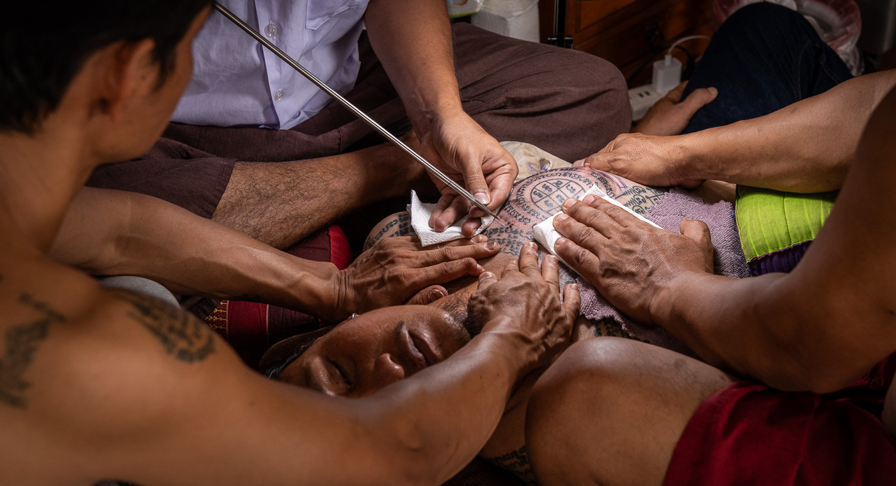
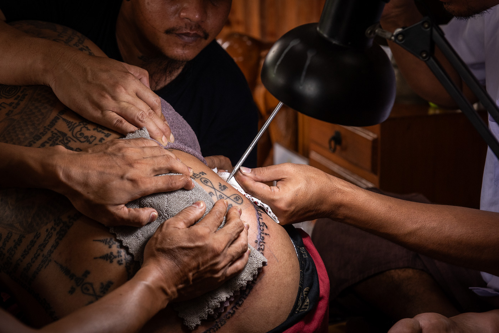
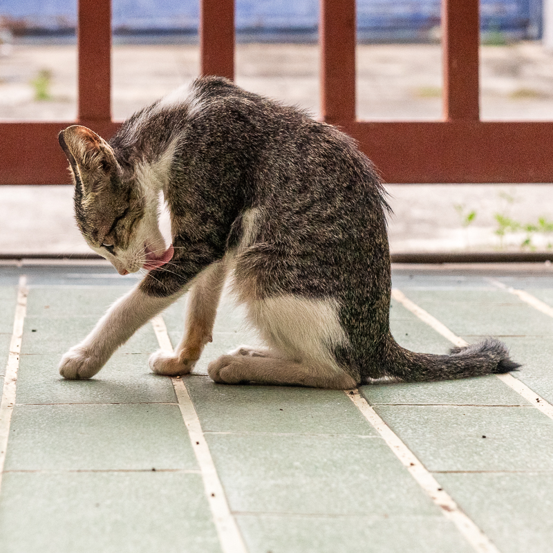

Spend the day photographing Sak Yant tattooing and the blessing ceremony inside a working sanctuary in Bangkok, with access to a place that would be difficult to enter and photograph on your own.

You are photographing a working Sak Yant ceremony inside the tattoo master’s sanctuary. The tattooing and blessing proceed as they would without photographers present. Nothing is staged, and you have time to follow what happens through the day.
2,000 baht per person.
Maximum 5 people.
Most of the day. You may leave earlier once you have the photographs you came for.
Your host is Tong, a Bangkok-born photographer and native English speaker. His familiarity with Sak Yant is personal: he first came to it wanting a tattoo and kept returning. The access behind this workshop grew from relationships built over time.
Throughout the workshop, he stays with the group, explains what is happening as it unfolds, answers questions, and translates when needed.

I had the pleasure of joining Mr. Tong on one of his tattoo workshops, and it was a fascinating experience. I had never before visited such a sacred sanctuary dedicated to traditional tattooing. From the location to the rituals performed by the Tattoo Master, it was clear this was the real thing—far removed from the tourist-oriented tattoo experiences found elsewhere in Thailand.
Mr. Tong’s explanations were both educational and interesting, reflecting his deep knowledge and years of involvement in the culture.
As a photographer, I especially appreciated being able to witness and photograph the entire process, with complete freedom to move around and find the best angles.
It was a memorable day, and I highly recommend this experience to anyone interested in traditional Thai tattooing.
Goran E.
I had a great time photographing the traditional art of Sak Yant with Tong as my guide! He is incredibly knowledgeable and you get to really get in there for photographs! I would definitely book this experience again.
Linnea H.
The group meets at a set point on the BTS or MRT and travels together from there. You receive the exact station once your place is confirmed.
The day begins with a short briefing about the space, how to work respectfully inside it, and what to expect.
You photograph through the day and may leave earlier once you have the photographs you came for.

Sunday, August 30, 2026. 2,000 baht per person. Maximum 5 people. To ask a question or reserve a place, get in touch by Line, WhatsApp, or email.

Walk around Thailand long enough and you start noticing the tattoos: on the old man selling dried fish at the market, or on the person in front of you at the 7-Eleven with the points of a geometric tattoo showing above the back of a T-shirt. Once you know what you are looking at, you see Sak Yant everywhere.
The exact origins of Sak Yant are not fully agreed upon. Historians generally place the practice around the third century, when yantra geometry used in Hindu and tantric practice across South Asia arrived in what is now Cambodia, Thailand, and Myanmar. The tradition draws from Hindu geometry, Buddhist Pali scripture, and older animist practice. Tattooing these designs onto the body, rather than wearing or displaying them, is specific to mainland Southeast Asia.
For much of its history in Thailand, Sak Yant carried a social stigma. It was associated with criminals, fighters, and people in dangerous occupations, and conservative Thai society largely avoided it.
That began to change in 2003 when Ajarn Noo Kanpai tattooed Angelina Jolie. The attention that followed introduced the tradition to a western audience and began removing some of the stigma inside Thailand itself.


Edward, before everything happened.
This work is run out of Bangkok by one person, six rescued cats, and relationships built inside Thai tattoo culture. Edward is the one currently in recovery. He was a stray I fed outside my house almost every day, until he disappeared for two days and came back scared and hissing. The vet x-rayed him: his pelvis was cracked in half and one leg had come out of the joint. He also had a fungal infection that got missed the first time around. He takes antifungal medication every day. He is patient. He is getting better.
A portion of every booking goes to their care. Six cats is not a small number, and it is not something I am interested in changing. Book a workshop. The photographs will be real. So is everything else here.